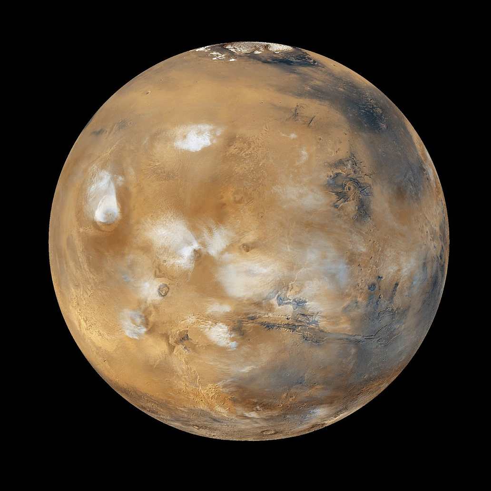

Mars

- The planet in solar system with most similar environment as the Earth.
- There is a confirmation of ice on Mars.
- People have sent some detection robots to this planet for further exploration.
- Sometimes it refers to the second planet where people might live on.
Back
Home
Next